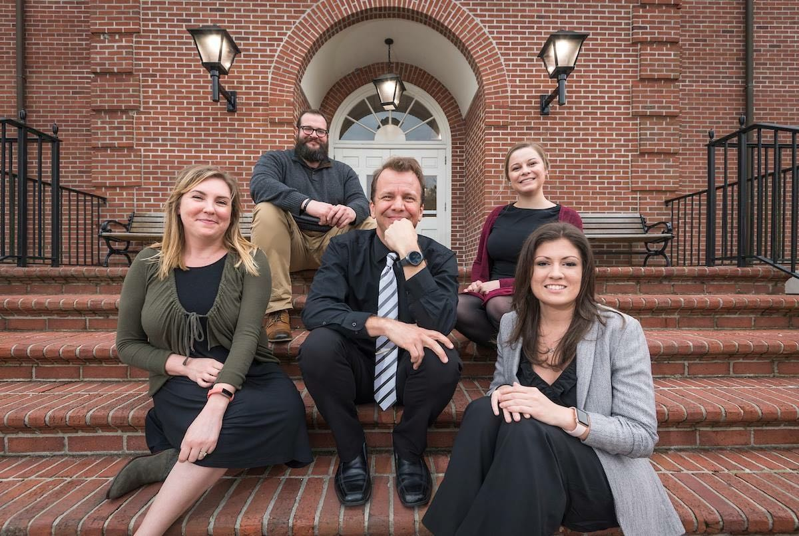

University Campus Space Utilization

Data Science Program
Campus Space Utilization Map
Dobo Fall 2018
Dobo Spring 2019
SAS Global Forum Paper
Created by the SAS SuperFreqs
Greg Terlecky, Michelle Page, Brittany Palmer, and, Hilary Melroy